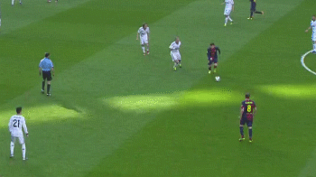
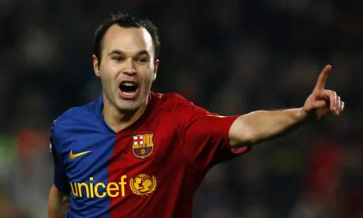

"the good old times"
Join us on a trip back to memory lane where beautiful football was enjoyed. An era where this club was unplayable. Click the sign up button to get weekly reminders.

The Pioneers Behind It

Andrés Iniesta Luján. Perhaps the best central midfielder of all time. An artist. Time seemed to stop when he had the ball.


Playing football is very simple, but playing simple football is the hardest thing there is.
- Johan Cruyff, founder of Tiki Taka
Call to action! It's time!
Sign up to join our commutiny in reminiscing the old times!